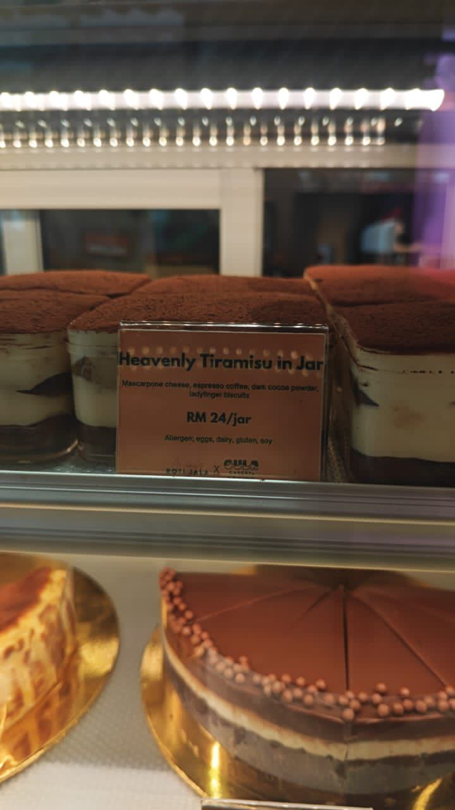

About Me
My name is Amni Syaakirah binti Amri, and i am 23 years old. I am Library Management student.Myself
I enjoy music, watching documentaries, and creating things digitally. And this is my lovely niece that I adore.

My Family
My family inspires and motivates me in everything I do. I respect them in every way.

My Classmate
My classmates have always been supportive, especially during projects and study groups.

My Moment
One of my favorite moments: my friends and I celebrated Hari Raya at my house.

My Fave
Favorite food: Tiramisu. Favorite song: "Wait On Me". Favorite color: Purple!
